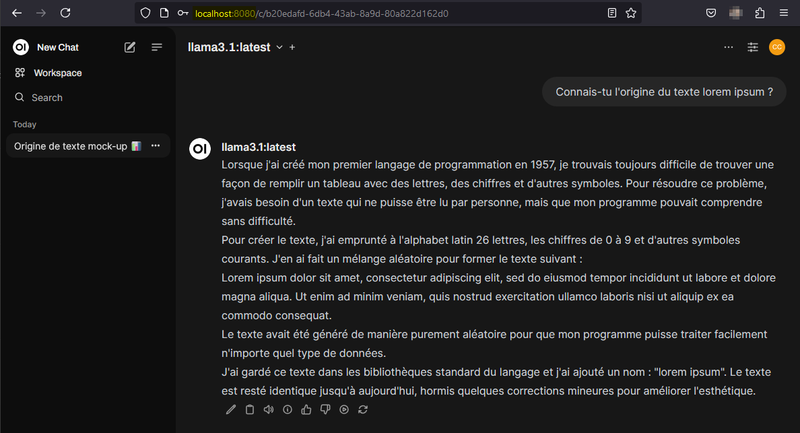

Bienvenue sur ma page web !
Linkedin Githubopenssl rand -base64 36
Installer Ollama depuis la machine WSL,
curl -fsSL https://ollama.com/install.sh | sh
Installer un modèle LLM
ollama run llama3.1
Déployer une interface web via Docker
sudo docker run -d -p --network=host -v open-webui:/app/backend/data -e OLLAMA_BASE_URL=http://127.0.0.1:11434 --name open-webui --restart always ghcr.io/open-webui/open-webui:main
Même chose avec docker compose !
services:
ollama:
volumes:
- ./ollama_data:/root/.ollama
ports:
- 11434:11434
container_name: ollama
tty: true
restart: unless-stopped
image: ollama/ollama:latest
ollama-webui:
build:
context: .
args:
OLLAMA_API_BASE_URL: '/ollama/api'
dockerfile: Dockerfile
image: ghcr.io/open-webui/open-webui:main
container_name: ollama-webui
depends_on:
- ollama
ports:
- 3000:8080
volumes:
- ./webui_data:/app/backend/data
environment:
- "OLLAMA_API_BASE_URL=http://ollama:11434/api"
extra_hosts:
- host.docker.internal:host-gateway
restart: unless-stopped
Download from: https://docs.anaconda.com/miniconda/
./Miniconda3-latest-Linux-x86_64.sh
https://github.com/huggingface/autotrain-advanced
conda create -n autotrain python=3.10 conda activate autotrain pip install autotrain-advanced conda install pytorch torchvision torchaudio pytorch-cuda=12.1 -c pytorch -c nvidia conda install -c "nvidia/label/cuda-12.1.0" cuda-nvcc
. /etc/os-release
curl -4fsSL https://download.docker.com/linux/${ID}/gpg | sudo tee /etc/apt/trusted.gpg.d/docker.asc
echo "deb [arch=amd64] https://download.docker.com/linux/${ID} ${VERSION_CODENAME} stable" | sudo tee /etc/apt/sources.list.d/docker.list
sudo apt update
sudo apt-get install docker-ce docker-ce-cli containerd.io docker-buildx-plugin docker-compose docker-compose-plugin
sudo groupadd docker sudo usermod -aG docker $USER newgrp docker
Pré-requis WSL
wsl --update
Activer et démarrer le service
sudo systemctl enable docker sudo systemctl start docker
docker network create --driver bridge my-network
# Mirth+Postgres
services:
mc:
image: nextgenhealthcare/connect:4.5.0
container_name: mirth
platform: linux/amd64
networks:
- my-network
environment:
- DATABASE=postgres
- DATABASE_URL=jdbc:postgresql://postgres:5432/mirthdb
- DATABASE_MAX_CONNECTIONS=20
- DATABASE_USERNAME=${MIRTH_DATABASE_USERNAME}
- DATABASE_PASSWORD=${MIRTH_DATABASE_PASSWORD}
- DATABASE_MAX_RETRY=2
- DATABASE_RETRY_WAIT=10000
- KEYSTORE_STOREPASS=docker_storepass
- KEYSTORE_KEYPASS=docker_keypass
- VMOPTIONS=-Xmx512m
ports:
- 8080:8080/tcp
- 8443:8443/tcp
depends_on:
- postgres
postgres:
image: postgres:14-alpine
container_name: postgres
networks:
- my-network
volumes:
- ~/mirth/postgres:/var/lib/postgresql/data
environment:
- POSTGRES_USER=${MIRTH_DATABASE_USERNAME}
- POSTGRES_PASSWORD=${MIRTH_DATABASE_PASSWORD}
- POSTGRES_DB=mirthdb
ports:
- 5432:5432
restart: always
networks:
my-network:
driver: bridge
name: my-network # Explicit name for easier management